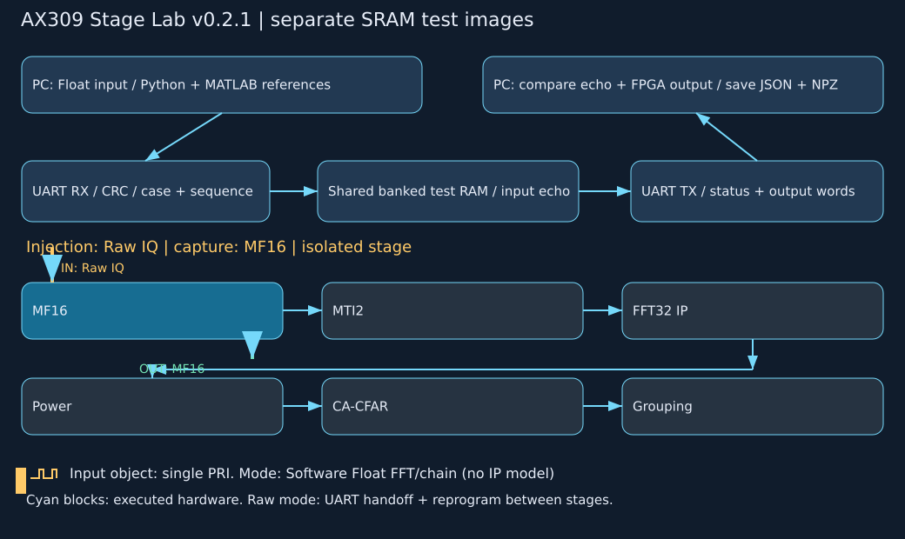
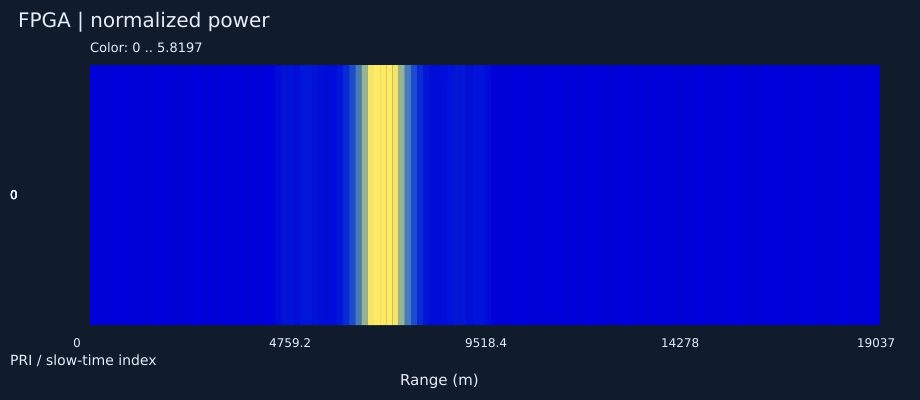
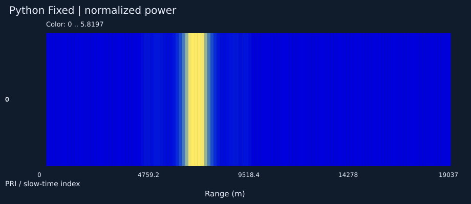
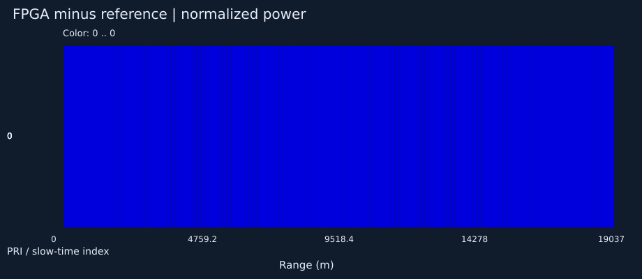
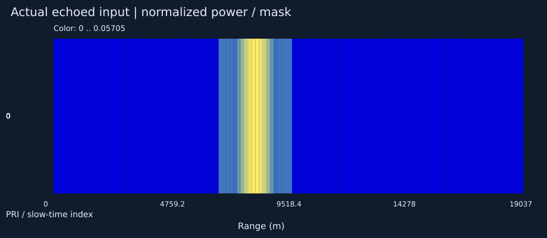
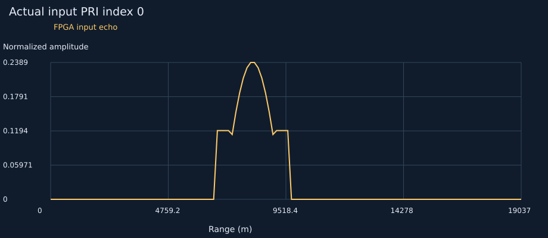
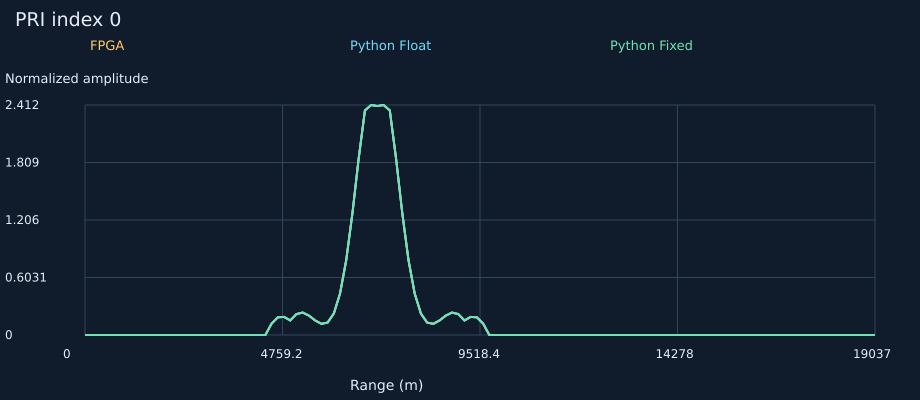

تفکیک برد: دو قله با معیار افت دره حداقل ۳ dB تفکیک نشدند؛ افت دره 0.0392051 dB.






| مرجع | معیار | مقدار |
|---|---|---|
| Python Float | RMSE | 6.71809e-06 |
| Python Float | NRMSE_percent | 0.0011872 |
| Python Float | max_abs_error | 1.9636e-05 |
| Python Float | units | normalized amplitude |
| Python Float | exact_integer | تعریفنشده |
| Python Fixed | RMSE | 0 |
| Python Fixed | NRMSE_percent | 0 |
| Python Fixed | max_abs_error | 0 |
| Python Fixed | units | normalized amplitude |
| Python Fixed | exact_integer | 1 |